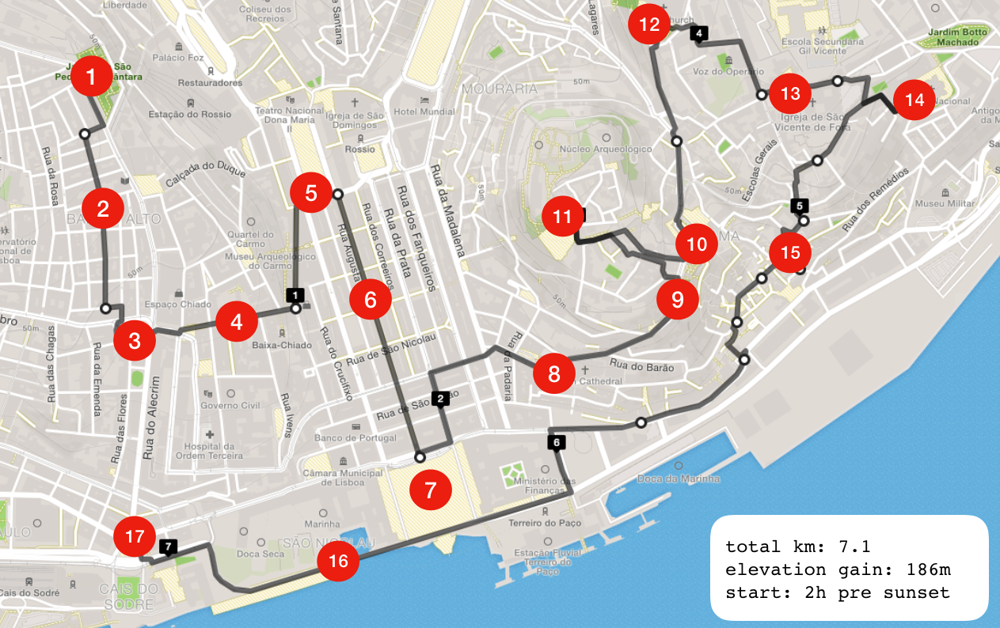

lisbon - the city of the seven hills

the walking tour
- 1. [START] Miradoura São Pedro de Alcântara
- 2. Bairro Alto
- 3. Praça Luís de Camões
- 4. Chiado
- 5. Rossio
- 6. Rua Augusta
- 7. Praça do Comércio
- 8. Sé de Lisboa
- 9. Miradouro de Santa Luzia
- 10. Largo Portas do Sol
- 11. Castelo de São Jorge
- 12. Miradouro da Graça
- 13. Igreja de São Vicente de Fora
- 14. Panteão Nacional
- 15. Alfama
- 16. Ribeira das Naus
- 17. [END] Rua do Alecrim
restaurants
- - Príncipe do Calhariz (Local)
- - Tasca das Flores (Local)
- - Zapata (Local)
- - Cafe Tehran (Iranian)
- - Boa-Bao (Thai)
- - Nunes Real Marisqueira (Local)
- - A Cevicheria (Modern)
- - Fado restaurants in Alfama (Clube do Fado is famous)
- - Mercado da Ribeira (very cool Timeout Market with a selection of different restaurants)
- - Cantinho da Paz (Indian, from Goa)
- - Any other "Tasca" will most likely have amazing food, they are all very similar - vibe and food-wise
mainstream tourism
- - Castelo de São Jorge (go for sunset, highly recommended at the end of the walking tour)
- - Miradouro da Graça (go for sunset, highly recommended at the end of the walking tour)
- - Torre de Belém
- - Mosteiro dos Jerônimos (make sure to go inside)
- - Pavilhão dos Descobrimentos
- - MAAT (interesting architecture)
- - Praça do Comércio
- - Chiado (very commercial)
- - Rua Augusta (great vibes leading to Praça do Comércio)
- - Oceanário de Lisboa (big aquarium)
local neighborhoods
- - Alfama - get lost in the small winding streets and enjoy the great typical restaurants with live Fado music
beaches
- - Praia da Ribeira do Cavalo (40-min drive)
- - Arrábida (40-min drive)
sports
- - Surfing at Ericeira and Peniche (affordable board and wetsuit rentals all around)
- - Wind/Kitesurfing at Praia do Guincho (lessons are a bit expensive, $85 half-day rental)
- - Downhill / Mountain Biking in Monsanto (~$15-$40 daily bike rental)
- - Bouldering at Vertigo ($10 daily + shoe rental)
- - Cycling in Sintra ($30 speed bike rental)
social
- - Bars at Bairro Alto (there are a bunch around the small streets like Rua da Rosa and Rua da Atala)
- - Baixa (around Mercado da Ribeira, Rua Nova do Carvalho, Rua de São Paulo)
day trips
- - Costa Vicentina (Sagres, Odeceixe, Amoreira, Amado, Burgau, Porto Covo (crowded), Ilha do Pessegueiro, Milfontes, Zambujeira do Mar, Almograve, Samoqueira) - 3 hours to get down to Sagres (Southern tip), good long day trip
- - Alentejo wineries (1-1h30min drive)
- - Algarve (2h40 drive, beaches)
- - Porto (3h00 drive, day trip doable but tiring - 2 days recommended)
- - Andalucia (5h40min drive)
- - Morocco (8h10min to Tangier through Gibraltar)
other
- - Lunch at Cascais, (30 min from Lisbon)
- - Museu Nacional do Azulejo
- - Museu Calouste Gulbenkian (amazing classical music program, cool temporary exhibitions, beautiful gardens and architecture)
- - Soccer @ Estádio José Alvalade (Sporting) Estádio da Luz (Benfica)
- - Sintra (30 min from Lisbon, Castelo dos Mouros, Palácio da Peña)